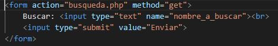
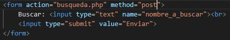

El desarrollador front-end es el que trabaja la parte mas visual de las aplicaciones web, de la parte del cliente, con html, css y javascript por ejemplo.
Sin embargo el desarrollador back-end es el que trabaja la parte interna de comunicación con el servidor y las bases de datos, parte del servidor, como por ejemplo con PHP.
Finalmente el full-stack es el profesional que domina ambas partes, front-end y back-end.
Framework CSS es un entorno de trabajo y de desarrollo, de hojas de estilo en cascada, esto es un lenguaje de estilos para dar formato a las webs en el front-end.
Boostrap es uno de los framework CSS mas conocidos junto a Tailwind CSS. Se diferencian principalmente en que Bbootstrap tiene gran cantidad de componentes preconstruidos y clases de utilidad, mientras que Tailwind se limita a pocos componentes y multitud de clases de utilidad.
La WCAG (Web Content Accessibility Guidelines) son una parte de las directrices de accesibilidad web publicadas por la Iniciativa para la Accesibilidad Web que a su vez es una rama del World Wide Web Consortium que vela por la accesibilidad de la Web.
Es tan importante validar, porque nos aseguramos que un documento escrito en un determinado lenguaje (por ejemplo XHTML) cumple con las normas y restricciones de ese lenguaje.
Un servidor web es un ordenador que almacena, procesa y entrega archivos de sitios web, a los navegadores. Esa comunicación entre el servidor y los navegadores se produce mediante el protocolo HTTP (protocolo de transferencia de hipertexto), respondiendo a las pediticiones de los usuarios.
Mediante el método GET podemos pasar datos de una web a otra, de forma visible en la url.
Por ejemplo: 
En el archivo busqueda.php recuperaremos el valor de nombre_a_buscar a través de $_GET["nombre_a_buscar"])
Mediante el método POST pasamos datos de una web a otra, de forma trasparente.
Por ejemplo: 
En el archivo busqueda.php recuperaremos el valor de nombre_a_buscar a través de $_POST["nombre_a_buscar"])
Apache es un servidor web HTTP de código abierto. Está desarrollado y mantenido por una comunidad de usuario.
XAMPP es un pack de software libre que contiene MariaDB (sistema de gestión de bases de datos derivado de MySQL), Servidor Apache, intérprete de lenguaje PHP, intérprete de lenguaje Perl.